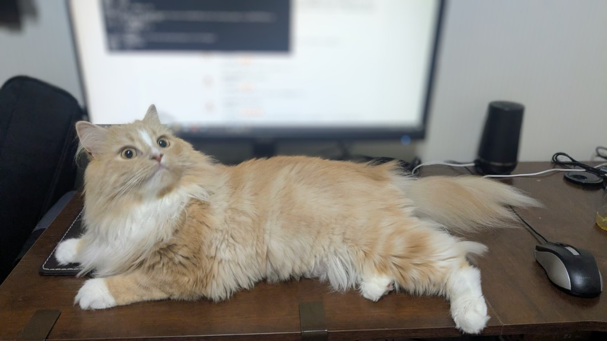

お邪魔の天才！？仕事中のモカ

仕事をしようとパソコンを開くと、どこからともなく現れるモカ。
「今から仕事を始めるぞ！」というタイミングを見計らったかのように、机の上へ。
「仕事より私を見て！」と言わんばかりの表情でこちらを見つめてきます。
最初は「ちょっとだけだよ」と頭をなでるつもりが、気付けばモフモフタイムが始まってしまいます。
ふわふわの毛並みをなでていると、とても気持ちよくて、ついつい手が止まりません。
そして、時計を見ると…
「あれ？もうこんな時間！」
仕事はなかなか進みませんが、こんなかわいい邪魔なら許してしまいます。
猫と暮らしている方なら、一度は経験したことがあるのではないでしょうか。
モカは今日も、私の仕事を“全力で応援（？）”してくれています。